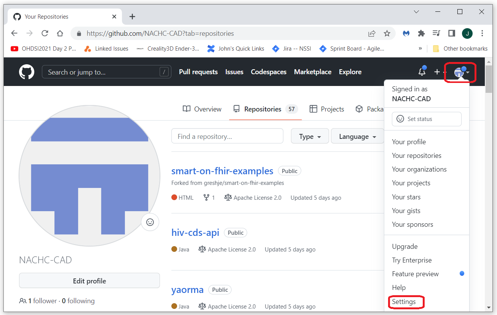
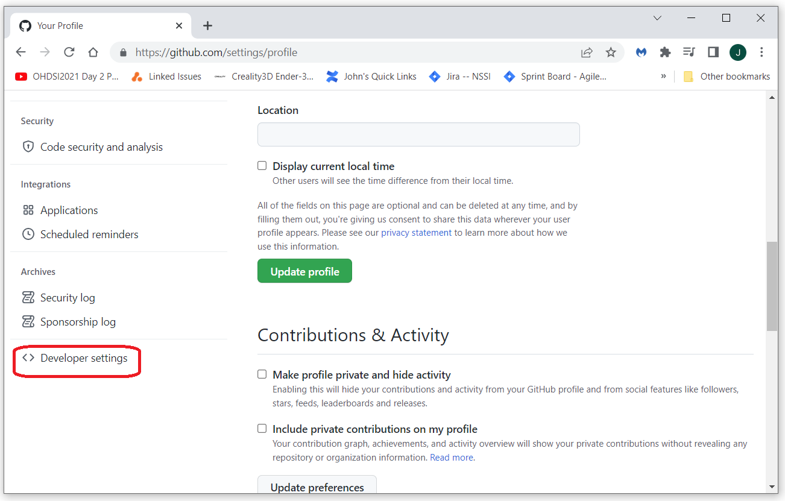
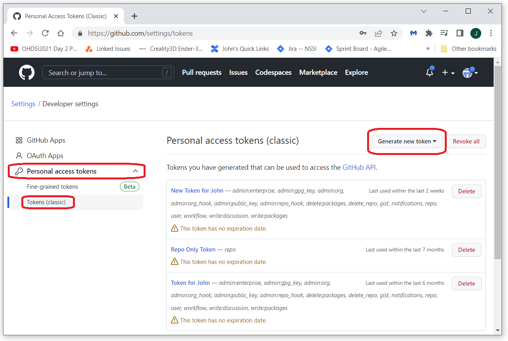

To create a github token, log into the github account you want the token for and
select settings from the gear menu in the upper right hand corner of the page as shown below.

Select "Developer settings" from the menu on the left.

Select "Personal access tokens", "Tokens (clasic)", then "Generate new token".

Copy the token and save it in a text file someplace safe.